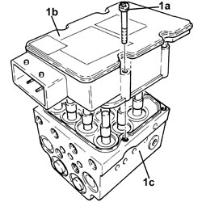
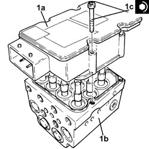

3340A20 ABS ELECTRONIC CONTROL UNIT - R+R
- Path
- Procedures > 33 BRAKES > 3340 ANTI-LOCK BRAKING SYSTEM (ABS) > 3340A ABS CHECK/ADJUSTMENT DEVICES > 3340A20 ABS ELECTRONIC CONTROL UNIT - R+R
- Kind
- repair procedure (removal / refitting; the operation number is the code)
- Applies to
- all engines; all production periods
- Interactive page
- https://sloeber94.github.io/elrnDB-fCrm/en/#/194000498
Applies to: all engines; all production periods
 Removing
Removing
 Refitting
RefittingOp. 5530B52 BATTERY SUPPORT/DRIP TRAY - R.R
Op. 3340A12 ABS HYDRAULIC AND ELECTRONIC CONTROL UNIT - R.R.
1. Undo the bolts (1a) and remove the ABS electronic control unit (1b) from the hydraulic control unit (1c).
- Remove the gasket.

Applies to: all engines; all production periods
Refitting
Removing- Clean the mating surfaces with a lint-free cloth. Wet the cloth with alcohol if difficult to remove deposits or gasket residues are present.
- Place a new gasket back in position.
1. Assemble the ABS electronic control unit (1a) to hydraulic unit (1b) and tighten the bolts (1c) to the recommended torque.
Component | Fastening | dia | Value (daNm) | Validity |
|---|---|---|---|---|
A.B.S. electronic control unit | Bolt | - | (hydraulic unit side) 0.25 - 0.30 |

Applies to: all engines; all production periods
Op. 3340A12 ABS HYDRAULIC AND ELECTRONIC CONTROL UNIT - R.R.
Op. 0010T64 BRAKE AND/OR CLUTCH FLUID CHECK LEVEL AND TOP UP AS NECESSARY
Op. 0010T65 HYDRAULIC BRAKE SYSTEM - BLEED AIR
Topics linked from this page (5)
- 0010T64 BRAKE AND/OR CLUTCH FLUID CHECK LEVEL AND TOP UP AS NECESSARY
- 0010T65 HYDRAULIC BRAKE SYSTEM - BLEED AIR
- 3340A12 ABS HYDRAULIC AND ELECTRONIC CONTROL UNIT - R.R.
- 5530B10 BATTERY - R+R
- 5530B52 BATTERY SUPPORT/DRIP TRAY - R.R